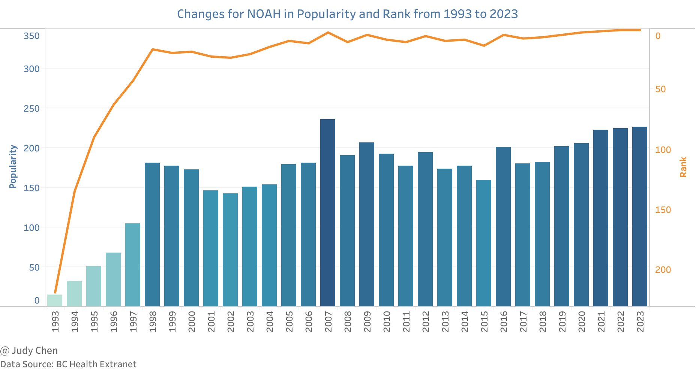
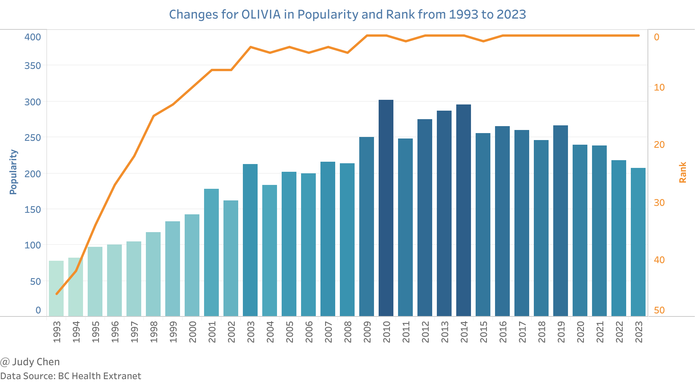
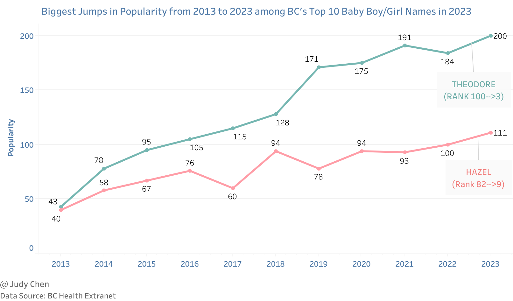

BC’s Top Baby Names 2023#
British Columbia has been collecting baby name data since 1922 through B.C.’s Vital Statistics Agency.
Top 10 Baby Boy Names#
The following are BC’s top 10 baby boy names in 2023. Most of these names were also in the top 10 in 2022, with only Benjamin dropping off the list and being replaced by Henry.

New parents in BC continue to favor the name Noah. It has officially topped the list of the province’s most popular baby names for the second consecutive year.
Over the past 30 years, Noah’s popularity has surged. From 1993 to 1998, its popularity experienced a dramatic increase, reaching over 200 for the first time in 2007. It has remained highly popular since then, consistently ranking at the top.

Top 10 Baby Girl Names#
Now, let’s take a look at BC’s top 10 baby girl names in 2023. Eight of these names were also in the top 10 in 2022, with only Evelyn and Mia dropping off the list and being replaced by Hazel and Mila.

Olivia has been the highest-ranked baby girl name for eight consecutive years. Since 1993, its popularity has gradually increased, peaking at 302 in 2010. Since 2009, Olivia has consistently been among the top three baby girl names.

Biggest Jumps for Top 10 Baby Boy/Girl Names 2013-2023#
Among BC’s top 10 baby boy names in 2023, Theodore saw the fastest increase in popularity, rising from 43 to 200, with its rank climbing from 100 to 3 between 2013 and 2023. Similarly, among BC’s top 10 baby girl names in 2023, Hazel experienced the most significant jump in popularity, increasing from 40 to 111, with its rank improving from 82 to 9 over the same period.

July 2024